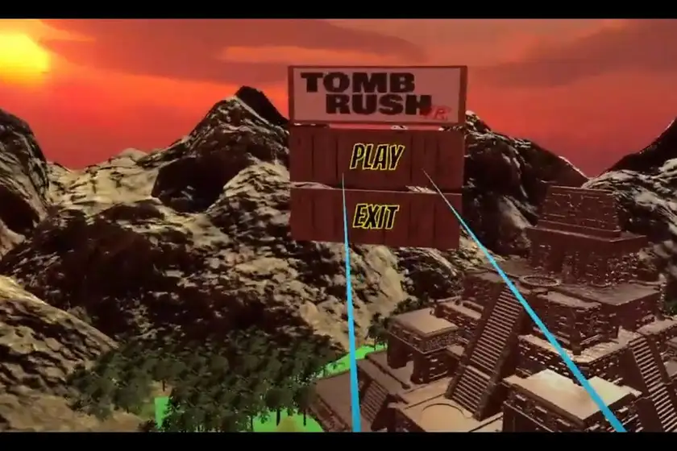
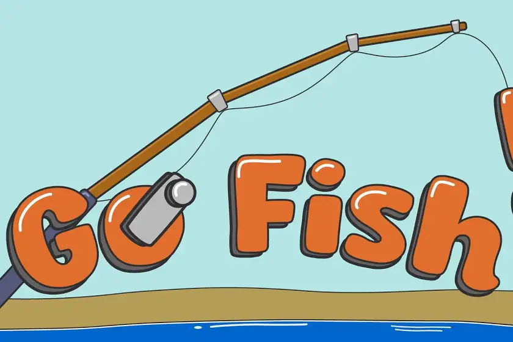
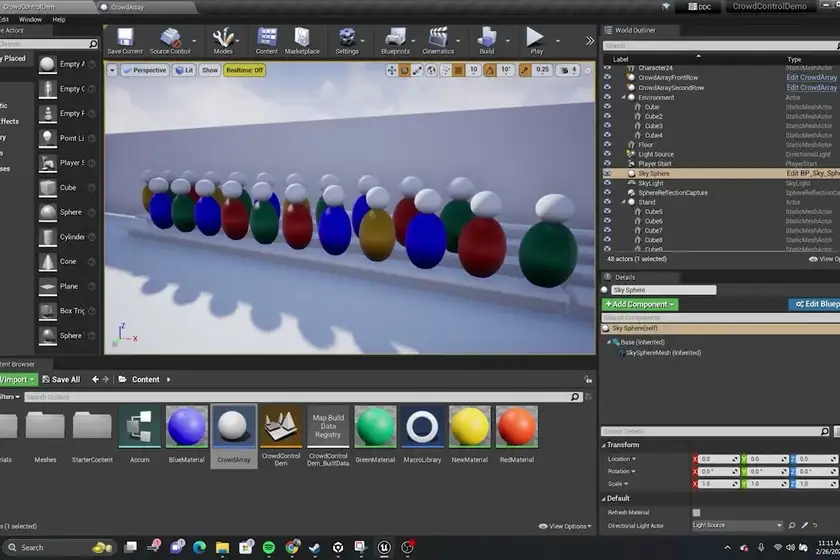
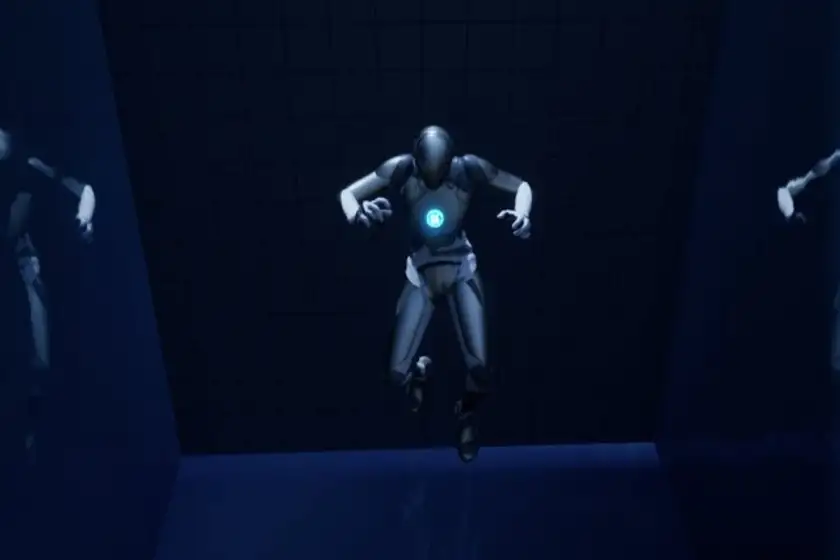

Projects
A fuller catalog of coursework, personal builds, and experiments. The five featured on the home page are the ones I would lead with.
-
L-System Visualizer
A Unity tool for exploring Lindenmayer systems: preset grammars plus editable rules, angle, and iteration depth, redrawn live as you change them.
-
Perlin / Diamond-Square Terrain Generator
Generates terrain from either Perlin noise or the Diamond-Square algorithm, with the parameters exposed so the effect of each one is visible while you tune it.
-
The Arcane Colossus
A Unity boss fight against the god Helios, built around learning his attack phases and surviving them.
-
Valley Memoirs
A Slenderman-style horror game: collect the pages scattered across the map, then escape through the door while something follows you. I hand-built the map and the pursuer.
-

Tomb Rush VR
A VR maze escape with an intro and outro around it. I built the majority of it. The original concept was larger and got scoped down to what the deadline allowed.
-

Go Fish XR
A mixed-reality multiplayer take on the card game, with a shared map and synced state between players. Built at a hackathon, so it covers what two days allowed rather than a finished game.
-
Mellow Curve
A browser app for loading audio samples and applying effects to them.
Experiments
Engine experiments from teaching myself Unreal. These are studies, not shipped work and not a service I offer: I put them here because what I tried is part of an honest picture, not because they represent production experience.
-

Crowd control demo
A study in crowd simulation: many agents pathing and reacting as a group, put together to see how the system behaves rather than to ship anything.
-

Water simulation
A study in water and buoyancy: surface behaviour and how a body moves through it, again as a learning exercise inside the editor.